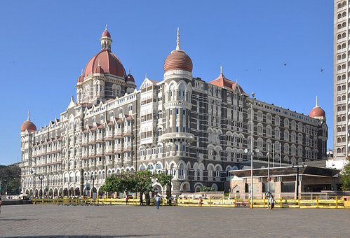
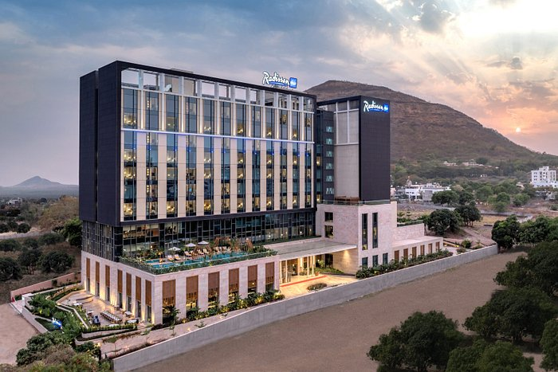
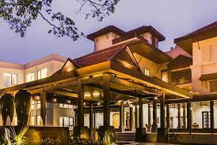

HOTELS

Stylishly designed with Indian-inspired decor and architecture, the rooms offer amazing sea, city or pool views. Each room comes with a 32-inch flat-screen TV, a well-stocked minibar, free WiFi and a luxurious bathroom. Guests receive 24-hour butler service. Yacht service is available at an additional charge during sailing season. location, hotel design and rooms

Raddison blu Hotel, Nashik
Set in Nashik, 2 km from Pandavlena Caves, Radisson Blu Hotel & Spa, Nashik offers accommodation with an outdoor swimming pool, free private parking, a fitness centre and a garden. Featuring a terrace, the 5-star hotel has air-conditioned rooms with free WiFi, each with a private bathroom. The accommodation provides room service, a concierge service and organising tours for guests. Everything was perfect.We really enjoyed our stay.The staff is very good and extremely courteous.Highly recommended place.

Rhytm , Lonavala
RHYTHM, Lonavala offers accommodation in Lonavala. The resort has a year-round outdoor pool and fitness centre, and guests can enjoy a meal at the restaurant. Free private parking is available on site.Every room at this resort is air conditioned and comes with a flat-screen TV. Certain rooms feature a seating area to relax in after a busy day. You will find a kettle in the room. Each room has a private bathroom equipped with a shower. For your comfort, you will find bath robes, free toiletries and a hair dryer.